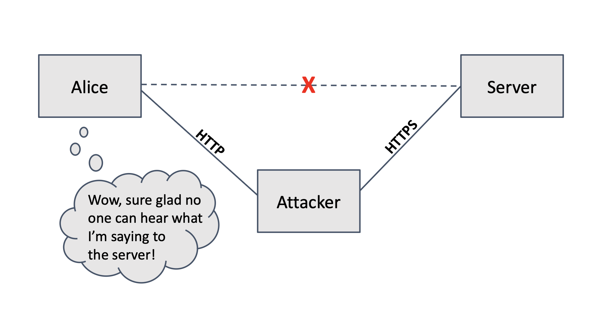
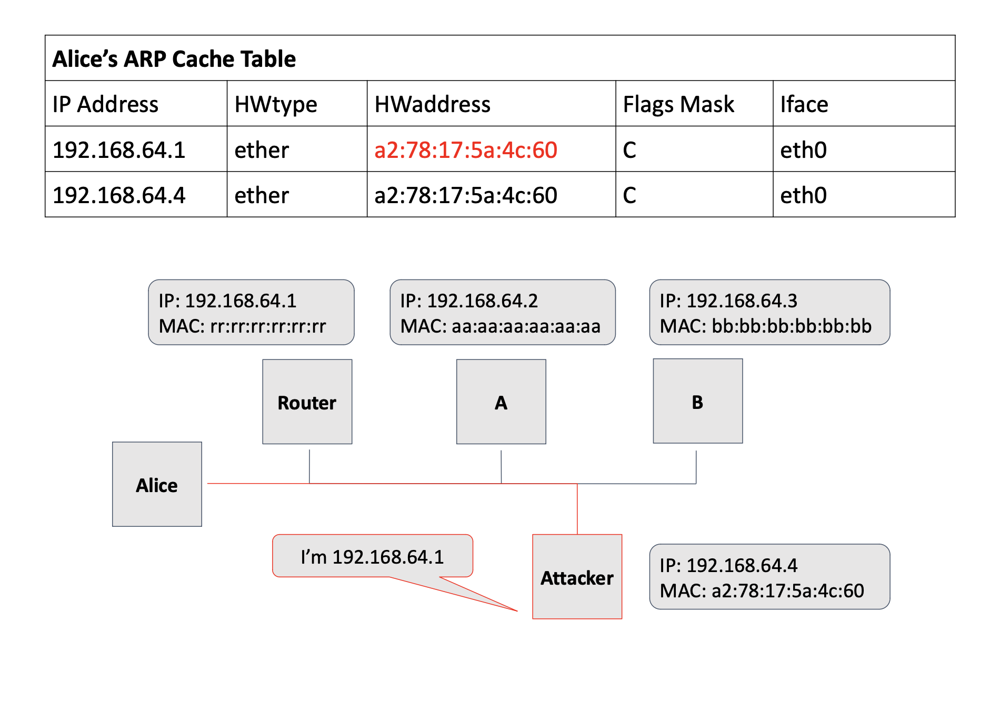
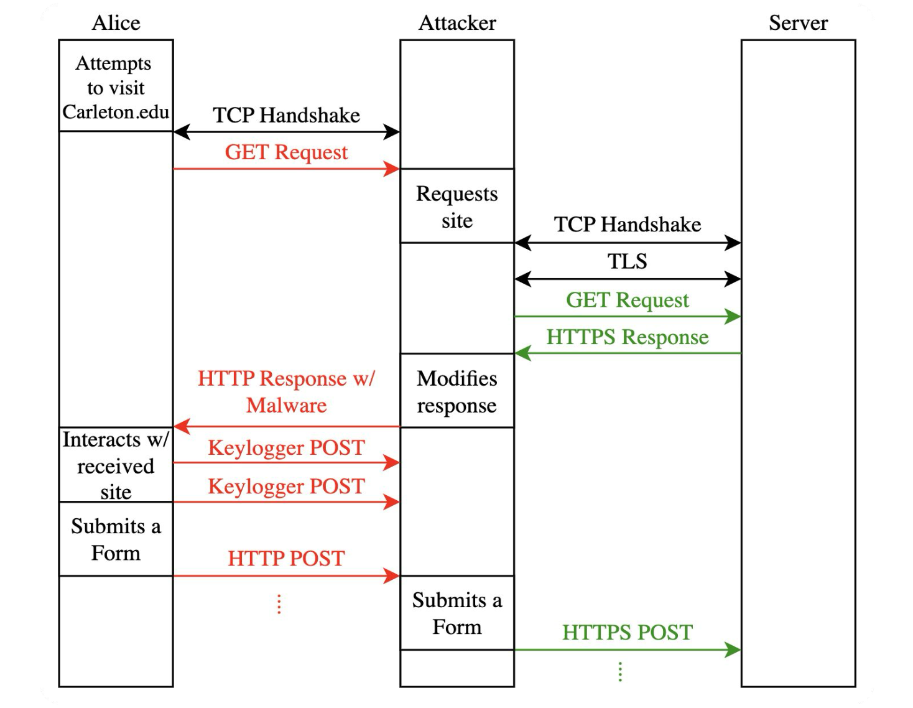

# Blog
When on a local area network, such as a public coffee shop WiFi network, each user is vulnerable to an attack called an adversary-in-the-middle attack (AITM). Attackers on such a public network have potential avenues to intercept communication and steal highly valuable data, such as network traffic or login information. These attacks are dangerous because the initial steps are hard to track, but modern browsers and servers have mitigation strategies in place to protect users. This project outlines the implementation of such an attack, and the strategies that one needs to use to protect themselves against it.
- Arp Cache Poisoning
- SSL Stripping
- Packet Modification
AITM (Adversary-in-the-Middle) Attacks
The purpose of an AITM attack is for the attacker to act as an undetected conduit through which the communication between two other entities flows. In this case, our three actors are the client, the server, and the attacker (which is a proxy server).
There are two types of AITM attacks: passive and active. Passive is simple eavesdropping; this loses any effect once encryption is established (as the attacker has neither the client nor server key). Active entails modifying the packets–this is where our project takes place.
[An important note about AITM attacks is that they don’t necessarily come about through user error. It isn’t like a suspect link was clicked or the client fell for a scam. Instead, the attacker takes advantage of vulnerabilities in the network to situate itself in communication lines.]
There are many built-in protective measures against AITM attacks because they are very dangerous, as sensitive data like credentials can be stolen or online activity observed. These safeguards occur on both the client-side (in the browser, like Chrome) and server-side.
- How does the attacker get situated in the middle of the communications?
- What can the attacker do once it is there?
ARP (Address Resolution Protocol) Cache Poisoning
To establish itself in the middle of packet flow, the attacker can take advantage of a technique known as ARP cache poisoning. On a local network, each device has an ARP table. This can be thought of as a directory linking IP addresses to MAC addresses. So when Device A wants to communicate with Device B, A will look up B’s IP address in A’s ARP cache to find B’s MAC address. If there is no entry for B’s IP, then A will broadcast a request to the local network, asking “what MAC address goes with this IP?”
There are no built-in security features to the ARP system. The way that it works relies on being able to broadcast information or ask for where a device lives, without authentication. Thus, it is vulnerable to spoofing.
There are three main characters here: the client, the attacker, and the router (gateway from the local network to the internet). The attacker floods the client’s ARP table with messages linking the router’s IP address with the attacker’s MAC address. We send one request every 2 seconds to maintain our AITM status. Simultaneously, the attacker floods the router’s ARP table with messages linking the client’s IP address to the attacker’s MAC address. Now, both the client and the router send all traffic meant for the other to the attacker.
- Obtain the MAC address of client via IP address
- Obtain the MAC address of router via IP address
- Create spoofed messages on Level 3
- Wrap these messages in Ethernet routing frames that contain the destination MAC address
- Send these packets in a continual loop until the user terminates the session
We make use of threading to simultaneously run ARP cache poisoning and our AITM attack. This enables us to have more control over the attack mode selected, as we either host our attacking server or perform denial of service.
Denial of Service (DOS)
A powerful but straightforward type of AITM attack is denial of service, abbreviated as DOS. Because the attacker controls the flow of packets, it can prevent any packets from ever reaching the intended server by dropping them as they come in. We also found this mode of attack to be a helpful diagnostic tool to ensure that all packets are indeed routed through the attacker.
SSL Stripping
We also implemented a more dangerous mode of AITM attack: SSL stripping. This attack downgrades the target’s connection to a server from HTTPS to HTTP, thus exposing private information as plaintext.
OverviewPrimarily, on the modern internet, security measures are enforced to protect users from themselves. Pretty much all servers strictly reject HTTP connections, and most browsers (like Chrome and Firefox) automatically upgrade requests to HTTPS.
So, then how can this attack come to be? It relies on the fact that the TLS handshake must take place for encryption to work. Thus, the first request sent by the client to the server is necessarily simple HTTP. We also take advantage of how most users do not specify “https://” at the beginning of links when typing into the search bar. A user is much more likely to type “github.com” than “https://github.com” when trying to go to that site. This means that this first request is HTTP, going to port 80. Our attacking server is listening at port 80. So now, the packets are routed to our attacker machine (via ARP cache poisoning) and then processed by our attacker server once they have arrived (as they are intended for port 80). Now, our attacker server can connect securely to the website. To the website, the attacker server is just another client. We pass along the contents of all of the requests the client makes. But in the responses, we downgrade the connection to HTTP between the client and our attacker server.
Now, given this overview, let’s talk about the minutiae of how we execute this attack.
Setup: Proxy server & firewallsFor our attacker, we set up a proxy server on the attacking machine. We enable IP forwarding to be able to handle references to HTTP Secure (HTTPS) because our server is just listening on port 80, which is HTTP. This also allows for the page to load more quickly, as IP forwarding means that those packets do not have to travel through our attacking server, thus eliminating unnecessary steps.
We also make use of iptables to direct all packets intended for port 80 (regardless of IP) to our attacking server. This is an important step because otherwise the packets make it to our attacking machine (via the ARP cache poisoning) but do not get received by the server. IPtables allows us to include a rule that sends all incoming HTTP packets to our server.
HeadersThe headers on HTTP requests contain important information about how the server should respond to requests. The primary security-related header we deal with is the “Strict-Transport-Security” header. This header (added by the browser) forces the server to upgrade the connection from HTTP to HTTPS. It is responsible for why you can type “www.example.com” and go to “https://www.example.com” immediately. It is essential that we strip this header from the client’s GET requests because we need to keep its connection in plain HTTP. We also strip “Content-Security-Policy,” “Transfer-Encoding,” and “Content-Encoding” to further limit the ability of the client to attempt to upgrade its security.
CookiesCookies are an important way for browsers to store information that the server wants them to maintain. Of particular interest to us are session cookies (from the destination server) and CORS protocol cookies (from our server). Session cookies are necessary for enabling user login attempts. Our server handles secure session cookies sent from the destination server via Python requests. The client does not get to have these cookies since there is no need for it. CORS cookies are essential for our server to enable in the HTTP connection with the client because that allows for our Keylogger to work. Otherwise, we cannot send back that information.
GET RequestsTo handle GET requests, the attacker acts as a proxy server to the target, inviting the target to connect to them. The target connects to the attacking server and sends a GET request to the server. The attacking server forwards that request to the domain server and receives a response. The attacking server then modifies the resulting webpage as needed to inject malicious code, and returns the webpage to the target.
POST RequestsFor login information, once the target has sent a GET request, the attacking server returns a modified webpage with an injected script. During the time where the client is on the login page, the script sends POST requests to the attacking server with the data of both login fields included. This allows the attacker to passively receive the target’s login information without any manually sent requests.
Error codesOur server needs to be equipped to handle errors that are returned back. The “redirect” errors (more commonly 301, sometimes 308) are circumvented by our use of the Python requests library and that we only connect securely (via HTTPS) to the destination server. A 301 redirect indicates that the domain requested is most likely updated to an HTTPS URL. We handle other errors directly within their scope and use try-except blocks to limit the effects of an error if it happens. Currently the sites we have tested this tool on do not throw errors, but we have the mechanisms in place to gracefully exit.
KeyloggerWe also implemented a JS script that logs everything that the client types. We do this by appending the script to the packet content (html) that we send from our attacking server to the client. In this way, we can easily record the credentials the client logs, as well as observe their activity on the website.
Final Thoughts
Being on the side of the “attacker” has been a very interesting concept to explore in this comps project. Learning how to break security really gives a deeper understanding into how it works. It is a never ending arms race between the people who develop security and those who try to defeat it, and it will be fascinating to follow updates in the security world now, armed as we are with this new knowledge.
Thanks for reading!# Documentation
Overview
- ARP Poisoning
- Denial of Service
- SSL Stripping
Installation
- pip3 install scapy
- pip3 install requests
Setting things up
In order to perform an AITM attack in a safe testing environment, you will first want to make sure that you have two Kali virtual machines installed on your computer.
From here you will want to start up both virtual machines, designating one as the attacker (where you have the project installed) and one as the target.
On the Attacking MachineTo start the AITM attack, run the following command in your attacking machine's terminal:
sudo python3 main.py
You will be prompted to specify the IP of the device you wish to attack. Enter the IP of the VM you designated as the target.
- Attack Mode: dos
- Attack Mode: ssl-strip
Make sure that you have not visited the site with an HTTPS connection before. Clearing history and cookies would address this.
Open up a browser, and try to visit a site (e.g. github.com) to see what happens.
Note: As of right now, our implementation is very limited and only works on select sites for SSL-Stripping. As such, for a working test, we recommend visiting github.com.
That's it!# Demo
# Group
# References
Please follow this link to our references.